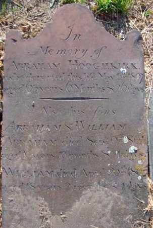

Hooghkerk
Spelled variously, the Hooghkerks were a mainline family of early Albany as a result of the two marriages of Lucas Luycasse who settled in Albany about 1686. From at least ten children, only one son would head an Albany city household. The origins and immigration history of the family has not been definitively fixed.
In 1720, only the name of the Albany pioneer (Luykas Hooghkirck) appeared on a list of freeholders in Albany County. The family grew slowly in the city - mostly with one household at a time.
The winter of 1741 was particularly hard on the Albany Hooghkerks as old Luycas and two grandchildren were buried in the church cemetery.
By the 1740s, Lucas Jr. had followed his father in the brickyard and added a lime kiln as well. In 1756, he was identified as "Lucas Ockirk."
Tailor John Hooghkerk signed the constitution of the Albany Sons of Liberty in 1766 and served in the Revolutionary army. Like most of his family, he lived on the Southside of Albany near what would become South Pearl Street at or near the location of the first Presbyterian meeting house.
The first Federal census of 1790 identified two Hooghkirk households in the first ward. Living Hoodhgkerk widows appear to have been absorbed within other households. Statewide, the Albany households were the only family representatives listed.
In 1813, five "Hooghkirk" households (including the Beaver Street addresses of two widows) were listed in the first city directory.
The photo on the right shows a stone moved from the Washington Park church plot to Albany Rural Cemetery after the Civil War. In 1830, three Hooghkerk-named households appeared in the city directory.
The early Albany Hooghkerks maintained a small but steady presence in the community from the late seventeenth century. Following the building trades and especially brickmaking, they were well represented in the community's production economy and owned modest homes mostly in the first ward.
Follow this link to more information on the Hooghkerk family on this website.